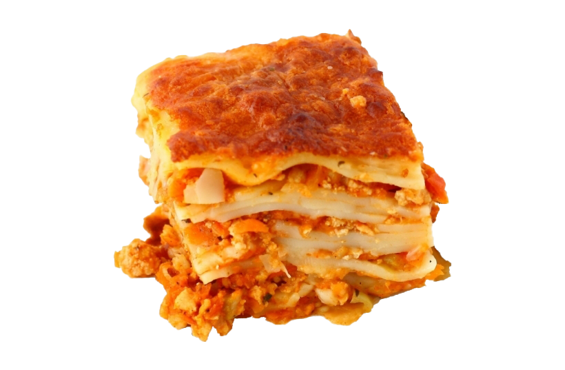

lasagna

Ingredients
1 (16 ounce) package lasagna noodles
4 cups ricotta cheese
4 eggs
¼ cup grated Parmesan cheese
salt and pepper to taste
1 teaspoon olive oil
3 cloves garlic, minced
1 (32 ounce) jar spaghetti sauce
1 teaspoon Italian seasoning
2 cups shredded mozzarella cheese
- Gather the ingredients. Preheat the oven to 350 degrees F (175 degrees C).
- Bring a large pot of lightly salted water to a boil. Add lasagna noodles and cook for 8 to 10 minutes or until al dente; drain and lay noodles flat on foil to cool.
- Mix ricotta, eggs, Parmesan cheese, salt, and pepper together in a bowl; mix well.
- Heat oil in a medium saucepan over medium heat; add garlic and sauté 2 minutes. Stir in spaghetti sauce and Italian seasoning until warmed through, stirring occasionally, 2 to 5 minutes
- Spread 1/2 cup of sauce on the bottom of a 9x13-inch baking dish. Cover with a layer of noodles. Spread 1/2 of the ricotta mixture over noodles; top with another layer of noodles. Pour 1 1/2 cups of sauce over noodles and spread the remaining ricotta over the sauce
- Top with remaining noodles and sauce; sprinkle with remaining mozzarella. Cover with a greased sheet of foil
- Bake in the preheated oven until cheese is melted and bubbly, about 45 minutes
- Serve hot :]
Home